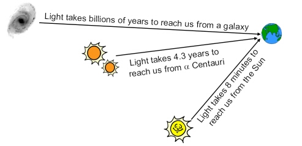
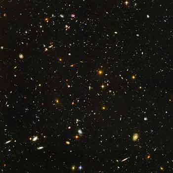

The night sky is like a cosmic time machine. Whenever we observe a distant planet, star or galaxy, we are seeing it as it was hours, centuries or even millennia ago. This is because light travels at a finite speed (the speed of light) and given the large distances in the Universe, we do not see objects as they are now, but as they were when the light was emitted. The time elapsed between when we detect the light here on Earth and when it was originally emitted by the source, is known as the ‘lookback time’. 
The more distant an object is from us, the further back in time we are looking.
For very distant objects, the lookback time is increased by the Hubble expansion of the Universe, which is causing the space between galaxies to increase with time. 
This image of the Hubble Ultra-deep Field (HUDF) is the ultimate visible-light view back in time. The light left some of the more distant galaxies in the HUDF over 10 billion years ago. The light from some of the larger spiral galaxies has taken about 1 billion years to reach us.
Credit: NASA, ESA, S.Beckwith (STScI) and The HUDF Team |